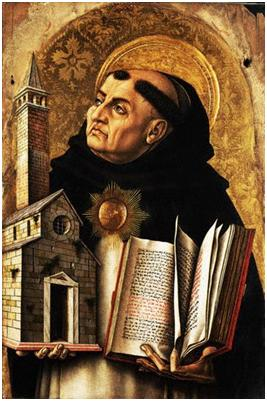

1) Rönesans: Geleceğe Dönüş
‘Baskıyı uygulamak zorbalara;
sıkıntısını çekmek ise aptallara özgüdür.’
Erasmus
atı’, içinde çok sayıda ulusal devleti ve değişik kültürü barındırır. Fransızlar Hollandalılardan farklıdır, bir Amerikalı belki de Lihtenştaynlı birinin varlığından habersizdir, Avustralyalı ve Yeni Zelandalılar aynı yarımküre içerisinde olup, diğer ‘Batı Dünyasına’ oldukça uzak bir yerde yaşarlar, yine de hepsi onları diğer uygarlıklardan–örneğin Araplar, Hintliler ya da Çinlilerden–farklı kılan ve Batı uygarlığını oluşturan ortak değer ve özellikleri paylaşırlar. Peki nedir bu ayırt edici, Batılı özellikler?
Alman ekonomist ve sosyolog Max Weber’e (1864-1920) göre, Batı’daki akılcılık süreci (rasyonalizm) diğer uygarlıklardan hem daha uzun sürmüş hem de daha derine işlemiştir. Daha akılcı düşünme ve araştırma yolları, sosyal değerlerde değişime neden olmuştur: bireyselcilik, uymacılığın (konformizm) yerini almıştır, sonradan kazanılmış haklar doğum hakkının yerini almıştır, ve dünyasal görüş (laisizm) doğaüstücülüğün yerini almıştır. Kısacası, akılcılık, dünyasallaşma sürecine kapı açmıştır (Weber 1976:13-31).
Peki nedir dünyasallaşma? Gerçekte bu kelime, ‘daha dünyasal olma ya da daha dünyasal düşünme’ anlamlarını taşır, genel olarak doğaüstü temellere dayandırılan bazı düşünce kalıplarının yerini, doğaüstü olanı hesaba katmayan kavramların yerini almasıdır. Bu kavram, toplumun bir zamanlar bugünkünden çok daha dindar olduğunu varsayar. Bu varsayım, ‘Batı’ için düşünüldüğünde, dinin etkisinin çarpıcı bir şekilde azaldığı inkâr edilemez.
Batı toplumunun dünyasallaşması karmaşık bir süreçtir. Bazen çok hızlı gelişirken, başka zamanlarda dinsel hareketler ya da uyanışlar bunu yavaşlatmış ya da bir süreliğine geriye bile çekmiştir. Aynı ülkedeki farklı bölgeler ve aynı toplumdaki farklı sosyal sınıflar farklı hızlarda ve değişik şekillerde etkilenmişlerdir. Fakat, sonuç olarak insan aklı ve mantığı, Tanrısal esinden baskın çıkmıştır.
Weber’e göre, Batının akılcılık süreci, Rönesans, Aydınlanma ve Reform hareketlerinden oldukça fazla etkilenmiştir. Peşi sıra gelen bu hareketler günümüzün modern, batılı, kapitalist, dünyasal –gelişiminin akılcılık sürecini hızlandırmasıyla, dünyasallaşmayı daha da ileriye götüren– sanayileşmiş toplumun temellerini oluşturur. Bu bölümde Rönesans’ın etkilerini inceleyeceğiz. Diğer bölümlerde ise, Aydınlanma’nın ve Reform’un etkilerine bakacağız. Fakat, ilk önce biraz Rönesans döneminin bağlamını inceleyelim.
* * * *
Roma İmparatorluğu’nun 5. yüzyılda dağılmasından sonra, Avrupa’nın yönetimi bir daha tek bir kişinin elinde olmadı. Fakat Patrick, Columba, Willibrord, Boniface, Eligius ve Anscar gibi kişilerce yapılan Hristiyanlığı yayma faaliyetleri Avrupalıların, farklı yöneticilere hizmet etmelerine rağmen aynı Tanrı’ya tapınmaya başladıkları anlamına gelir.
Bu müjdeciler sadece kiliseler kurmakla kalmadılar. Roma İmparatorluğu’nun parçalanmış bölgelerine adalet ve yönetim fikirlerini taşıdılar, böylelikle o zamanlar Kilise, yönetimin birçok işlevini yerine getirdi. Kilise vergi toplamaya başladı, mahkeme görevini üstlendi, okullar kurdu, hastalar ve akıl hastaları için bakımevleri işletti, ve gezginler için hanlar inşa etti. Karanlık Çağlar boyunca uygarlık ateşini canlı tuttu ve Avrupa’yı bir arada tutan, tamamen cehalete gömülmesini engelleyen çok önemli bir etken oldu. Kilisenin iki kurumu, katedral ve manastır, Latince’yi canlı tuttu ve birçok eski elyazmasını yok olmaktan kurtararak eğitimin can damarları haline geldi.
Neticede Kilise, Avrupa’nın en büyük toprak sahibi oldu. Bir şekilde herkesin hayatına girdi. En dik başlı asilzadeyi bile dize getirebilmek için, onu aforozla tehdit etmesi yeterli idi.
11. yüzyıldan, 13. yüzyılın sonuna kadar olan zaman aralığında, geç ortaçağ olarak da bilinen Rönesans öncesi dönemde ortaçağ uygarlığı en üst seviyesine ulaşmıştı. Yetenekli toprak sahipleri (Lordlar) barışı ve ekonomik gelişmeyi uzun bir süre korudular. Şehirler ticaret yolları boyunca kurulmaya başlandı, nüfus hızla arttı, insanlar tüccar ve zanaatkar olabilmek için yeni şehirlere göç ettiler. Suyun gücünden değirmenleri döndürmek ve tarlaları sulamak için yararlanıldı. Bataklıklar kurutuldu, ormanlar ıslah edildi, tarım yöntemleri gelişti. Bu da, yeni kurulan şehirlerdeki artan nüfusu besleyebilmek için yeterince fazla yiyecek olmasını sağladı. Tüccarlar uzun kervanlar halinde ticaret pazarları oluşturmak için Avrupa’nın dört yanına gittiler. Haçlı Seferleri Ortadoğu’ya kadar ilerledi.
Bu yüzyıllar süresince kilisenin, kendi gücünün ve yetkisinin çağının büyük fikirlerini ve sanatsal gelişmelerini yansıtmasıyla kanıtlanabilir. Amiens, Paris, Reims ve Chartres’da halen dimdik ayakta duran katedraller, hem soyluların hem de yoksulların ödemesi gereken bedelin bir simgesi gibidir.
Doğal olarak bu çağdaki en önemli bilim dalı teolojiydi. Arap ve Bizans uygarlıklarıyla olan ilişkinin artması nedeniyle, Roma’nın yıkılmasından sonra Avrupa’nın bilimsel gelişmelere yabancılaşmasından kaynaklanan duraksama dönemi telafi edilmiş oldu. Arapça ve Grekçe olan yapıtlar Latince’ye çevrildiği için daha fazla bilim adamı klasik görüş ile ilgilenmeye başladı. Grek filozof Aristoteles’in birçok yapıtının ortaya çıkarılıp çevrilmesi, birçok Ortaçağ bilginlerinin sadece akla ve mantığa dayanan felsefenin bütününü incelemelerini sağladı. Herhangi bir “Kutsal Kitap’a” sahip olmayan Aristoteles, Tanrı’nın varlığını sadece mantık temelinde kanıtlamaya çalıştı.
İlk önceleri Aristoteles’in düşüncelerine oldukça karşı çıkıldı. 1210’da Paris Üniversitesi onun çalışmalarını öğretmeyi yasaklayacak kadar ileriye gitti. Çünkü Hristiyanlığın evren hakkında Kutsal Kitap (yani, Tevrat, Zebur ve İncil) ile temellendirilmiş düşünce kalıpları vardı, bu fikirler bazen çeşitli yönlerden bu putatapan filozofun akılcılığıyla çelişiyordu. Örneğin Aristoteles kainatın sonsuz olduğunu savunuyordu, fakat bu düşünce Kutsal Kitap’ın Yaratalış bölümüne dayalı Yahudi-Hristiyan yaratılış inancına tamamen ters düşüyordu. Aristo’nun ortaya attığı fikirlerin kilisenin öğretilerine gerçekten karşıt olup olmadığı sorusu birçok Ortaçağ filozofunu Aristoteles’in felsefesini Kutsal Kitap’ın öğretileriyle ve eski Hristiyan teologlarının yazılarıyla karşılaştırmaya itti. Bu, Skolastisizm denilen bir düşünce akımının doğmasına yol açtı. Felsefenin bu dalı, Hristiyan gerçeklik anlayışını, Tanrı ve dünya arasındaki ilişkiyi temel alarak açıklamayı ve sistematik hale getirmeyi amaçlıyordu. Skolastik filozofların/teologların Hristiyan teolojisi ve Aristoteles düşüncesi arasında bir sentez oluşturma yolundaki çabalarından dolayı, Aristoteles karşıtı olan düşünce tam tersine döndü, Aristoteles’in yazıları, Batı Avrupası’nın Ortaçağ üniversitelerindeki mantık ve doğal felsefe için temel bir yönerge haline geldi. Bununla beraber Kilise, Kutsal Kitap’ı desteklemek için Aristoteles’in yazılarını bir kaynak olarak kullandı.
Skolastisizmin doruk noktasına ulaştığı 1200’lerde, Albertus Magnus, Halesli Alexander, Aquinolu Tomas, Roger Bacon, Aziz Bonaventura ve Robert Grosseteste gibi ünlü filozofların de içinde bulunduğu skolastikler, aklı, felsefe ve teoloji sorularıyla açıkladılar. Hristiyan öğretisinin gerçekliğini ve karşıt görünen teolojik bakış açılarının paralelliğini kanıtlamak için, her sorunun mantıksal ve akılcı yönünü düşünmede oldukça biçimsel yöntemler geliştirdiler. Ünlü filozof Aquinolu Tomas’ın (1225-74) savunduğu düşünceye göre, insan Tanrı ile ilgili temel gerçeklere mantıkla erişibilirdi; detaylar Tanrısal esinin yardımıyla açıklanabilirdi. Bundan farklı olarak Anselm ise felsefeye kendi yaklaşımını şu sözleriyle özetlemiştir: ‘Anlamak için inanıyorum’ (Credo ut Intelligam). Tanrı’nın eylemlerinin yalnızca esin yoluyla anlaşılabileceğini savunan Anselm, Ockham ve Duns Scotus karşı çıktıysa da, Aquinolu Tomas ve onun ardılları olan birçok Katolik düşünür Hristiyan inancının üst yapısını büyük ölçüde Aristoteles felsefesinin temelleri ve kilise geleneği üzerine kurmaya çalıştı. Roma Katolik Kilisesi (günümüzde de) Aquinolu’nun teolojik görüşlerini ve klasik mantığa dayalı felsefesini yansıtır. Bu sentez çok uzun süreli ve kötü sonuçlar doğurmuştur: geçmişte eleştirmenler Kutsal Kitap’ın öğretilerine eklenen Hristiyanlık dışı fikirlere karşı saldırırlarken bunların Hristiyanlık inancını yok etmeye başladıklarını düşünmüşlerdir.
14. ve 16. yüzyıllar arasında Ortaçağ Avrupası yerini modern Avrupa’ya bıraktı. Bu, Avrupa tarihinde sıkıntılı bir dönemdir. Kara Veba neredeyse Avrupa nüfusunun çeyreğini yok etti ve büyük sel baskınları yiyecek sıkıntıları, ölümlere, salgın hastalık ve kıtlığa neden oldu. Feodalizmin çöküşü iç savaşa neden oldu. İngiliz II. Henry ve Fransız XI. Louis gibi güçlü krallar ordular kurdular ve diğer feodal toprak sahipleri üzerinde zafer kazanarak merkezi yönetimi güçlendirdiler. Birçok şehir ve kent, kralları destekleyerek barışa, adalete ve merkezi bir otoriteye karşılık vergi ödemeye razı oldu.
Modern devletler geliştikçe kilise ile çekişmeler de arttı, ve bu da kilisenin kendi içindeki çatışmaların artmasına sebep oldu. Zaman zaman Papalık sistemi ile ilgili sorunlar da ortaya çıktı. Bunun gibi tartışmalar, kilisenin gücünü zedeledi. Pek hoş olmayan bu sosyo-politik ortam Rönesans’ın arka fonu olarak nitelendirilebilir. Rönesans da Protestan reformuna yol açmıştır.
Rönesans kelimesi, Latince’den gelen ‘yeniden doğuş’ sözcüğünden türemiştir. Bilim ve sanat alanındaki uyanışı ifade eden Rönesans, 14. yüzyılda İtalya’nın şehir devletlerinde başlamış ve 17. yüzyılda Avrupa’nın diğer bölgelerine uzanmıştır.
1860’ta Alman tarihçi Jacob Burckhardt tarafından yazılan Die Kultur der Renaissance in Italien (‘İtalya’da Rönesans Kültürü’) adlı eser, bu konuda yazılan en etkili yapıtlardan biridir. Burckhardt’ın savı, İtalyan Rönesans’ının bireyi, sosyal bir grubun üyesi olma konumunun üzerine yükselterek, kendi haklarına sahip bir insan yaptığı yönündeydi. Burckhardt’ın bu düşüncesine çok karşı çıkıldıysa da, o, önemli bir gerçeğin farkındaydı: 1400’lerin sonu ve 1500’lerin başındaki Rönesans’ta ortaya atılan yeni fikirler çok az sayıda insan kabul etse de, zamanla etkisini birçok alanda belli etmiştir. Sanat, edebiyat, tarih, teoloji, felsefe, siyasal bilimler ve eğitimde görülen değişimlerin yanında, ortaçağ sanatının düz ve tek boyutlu resimleri ile Rönesans’ın doğru perspektif kullanılarak çizilmiş olan eserleri arasındaki fark da açıkça görülür.
Rönesans bilginleri ve sanatçıları, ortaçağ döneminin birçok yönünü reddederek bunun yerine eski Grek ve Roma uygarlıklarının yeniden doğuşunu benimsediler; dayandıkları nokta eski Greklerin edebiyat ve felsefe gibi alanlarda oldukça ileri gittiklerini düşünmeleriydi. Grek ve Roma çağından kalma el yazmalarını araştırma arzusu Rönesans bilginleri Avrupa’daki manastır kütüphanelerini taramaya itti. Bu Rönesans hümanistlerinin en temel görüşlerinden biri, ruhsal gerçeklere daha çok bilgiyle ulaşılabileceği fikriydi.
Francesco Petrarch (1304-1374) ve Giovanni Boccaccio (1313-1375) en eski Rönesans hümanistlerindendir. Klasik edebiyatın yanı sıra doğaya olan düşkünlüğü nedeniyle Petrarch, ilk ‘modern insan’ olarak da nitelendirilebilir. Petrarch’ın arkadaşı Boccaccio, Klasik Grekçe üzerinde çalışan ilk Batılılardandır. 1300’ün ortalarında bu iki arkadaş birçok eski el yazmasını buldular. Bunları koleksiyon haline getirerek Floransa’nın merkezi kütüphanesinin temelini oluşturdular. Bu çabalarıyla klasik çalışmalara önemli bir konum ve ivme kazandırdılar.
Onların ve onlardan sonra gelen filozofların, eski el yazmalarını bir araya getirerek üzerlerinde çalışmaları, Latince çevirilerdeki hataların ortaya çıkmasına neden oldu. Bu analiz, Rönesans hümanistlerini, orijinal metinlerin yazarlarının farklı dilbilgisi kullanımlarını ve yazdıkları dönemin tarihsel altyapısını incelemeye itti. Yeni yeni gelişen metinsel eleştiri biliminin prensiplerini Donatio Constantini’ye uygulayan V. Papa Nikolas’ın sekreteri ve yetenekli bir dilbilimci ve tanınmış bir tarihçi olan Lorenzo Valla (1407-1457), söz konusu belgenin gerçeği yansıtmadığını kanıtladı. Büyük olasılıkla 7. yüzyıla dayanan bu belgede, İmparator Konstantin’in imparatorluğunun batı kısmının hem ruhsal, hem de dünyevi yetkisini Papa’ya devrettiği belirtilmişti. Ne var ki Valla, bunu bir ortaçağ papazının yazdığını kanıtlamıştır. Valla gibi adamların daha da geliştirdiği teknikler daha sonra Kutsal Kitap çevirmeni Rotterdamlı Erasmus gibi tanınmış hümanistlerce de kullanılmıştır. Metinsel eleştiri ilkeleri, sadece tarih ve filoloji gibi bilimlerin temellerini atmakla kalmamış, bunun yanında fen bilimlerine de çok büyük bir katkıda bulunmuştur.
Güvenilirlikleri kanıtlanan hümanistler kiliseyi daha eleştirisel gözlerle incelemeye başlamışlardı ve Kilisenin yetkisine ilk saldırılardan biri Floransalı hümanist ve devlet sekreteri olan Coluccio Salutati’den geldi (1331-1406). Bu zamana kadar, savundukları fikirler olgunlaşmamış beyinleri yanlış yönlendirebilir düşüncesiyle, eski dönemlerden kalma materyaller sadece katı bir kontrol altında çalışılabiliyordu. 1380 yıllarında, Salutati, klasik yazarların, savundukları öğretici (didaktik) değerlerden dolayı, açıkça ve özgürce öğretilmeleri gerektiği düşüncesini savundu.
Dönemin uzun süreli savaşlarının birinde Milan, Floransa’yı yenmek üzereyken Salutati onlara eski Roma ruhunu hatırlatarak kendi yurttaşlarını cesaretlendirmişti. Zamanla, Romalıların torunları oldukları anlayışı, İtalyan kültürünün en önemli kısmı haline geldi. Böylece, yeniden canlanan eski zamanların ruhu, kilisenin ve devletin giderek daha da farklı yönlere gittiği bu modern tarih çağını başlatmış oldu. Örneğin, Rönesans’tan önce bir Niccolo Machiavelli’nin Hristiyan ahlakı ile birebir bağdaşmayan bir siyaseti anlattığı II Principe (Prens) gibi bir kitabı yazması düşünülemezdi (Prens, 1513’te yazılıp 1532’de yayınlandı). Baldassare Castogliones de, asil bir soydan gelmek yerine, sonradan medenileşmenin daha iyi olduğunu öğreten II Cortegiano’yu yazamazdı Rönesans’tan önce... Her ikisi de, 16. yüzyılda en çok satılan kitaplar arasındaydı ve her ikisini de okuduğumuzda, kendimize dair bir şeyler buluruz.
Düşünelim!